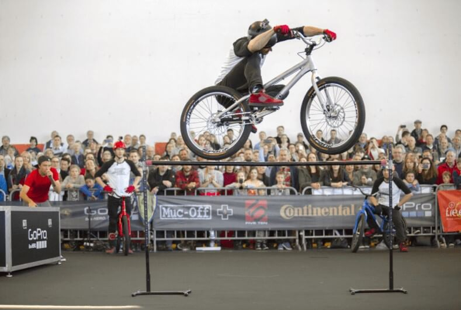
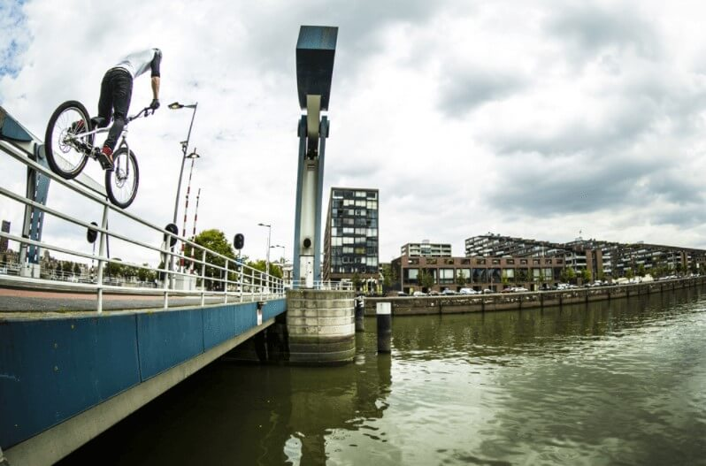
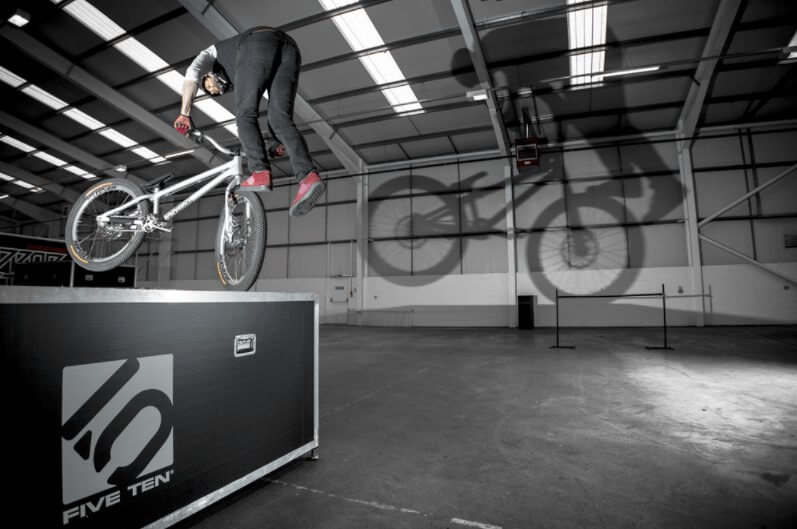
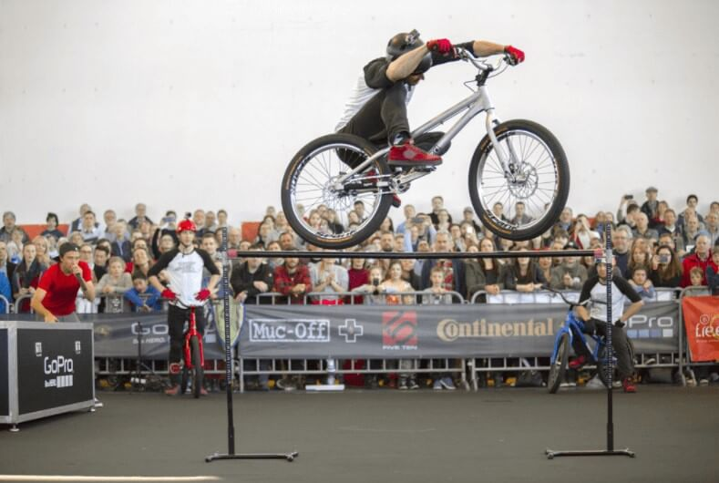
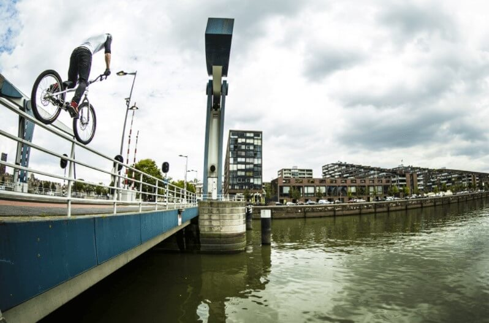
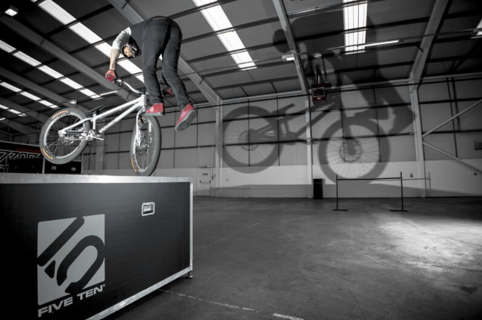

Let's go back to basics...
The point to any form of trials riding, (be it street, recreational, professional or competition) is simply to travel from point A to point B, WITHOUT putting your feet on the ground.
This could mean climbing a 6 foot vertical wall, jumping across a canal, climbing a stairset, or even perching on a rooftop eyeballing your landing target. All of this is done with the extreme abilty to balance on the spot and on narrow objects,for long periods of time.
Remember, Trials is not a race, It is all about reaching the end of the course with the least amount of points.. Click HERE for Trials Rules.
 





Overview
The most important part of a trials bike really has to be the brakes. On some competition setups they are so powerful, they even put motorbike brakes to shame.. Well, would you want to be balancing on the edge of a wall on the back wheel, and the the brake starts to give way? No way! The sudden stopping force of the brakes on a Trials Bike can be easily noticed in the videos below. Notice how the riders push on the forward pedal for sudden momentum, and then just as quickly, lock up the wheel to stop on the precise point the rider planned to land on.
Here is Ali Clarkson Showing you how it is done with Street Trials..
..And another for Charlie Rolls in the World Championships